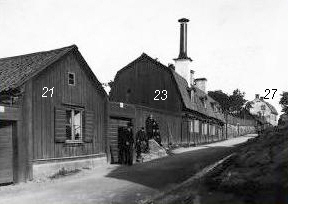
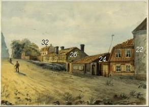
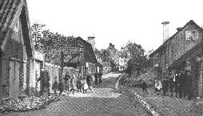
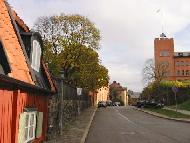
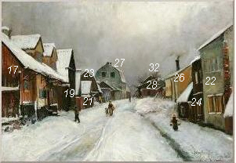
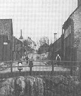
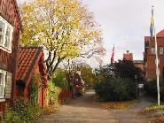

|
 Stigbergsgatan 21-27 (Kv Stammen). Till vänster närmast nr 21, Blockmakarens hus. Sedan nr 23 och i fjärran nr 27. Bilden är tagen 1907.
Nr 23
Arklimästaren Johan Kiällbom byggde på 1730-talet ett envånings trähus, som utvidgades av
stoffvävaren Isac Långfelt
på 1740-talet, fick vindsinredning 1773 och vid mitten av 1800-talet tillbyggdes vid västra
gaveln. I gathusets bottenvåning är
1700-talsinredningen helt bevarad.
Nr 21 Blockmakarens hus
Huset, som består av två sammanbyggda stugor, den norra
ursprungligen bagarstuga, uppfördes troligen 1729 av skeppstimmermannen Johan Hansson.
Åren 1744-1765 ägde packhuskarlen Erik Westervik gården. Senare ägare har bl. a. varit
sidenvävargesäll, sjökapten, viktualiehandlare, sjötullsvaktmästare, sillpackare och
vaktmästare. År 1853 såldes gården på
stadsauktion till timmermannen Lars Lundqvist. Hans svärson, blockmakaren Gustaf
Andersson, var den siste private
ägaren.
|
 Stigbergsgatan 24-26, 32 (Kv Grenen). Till höger nr 24-26, längst bort nr 32. Här ligger idag Frans Schartaus Handelsinstitut. (Henrik Reuterdahl, akvarell, 1889) Perspektivet är mera från NV än de omgivande bilderna.
 Mittemot till höger nr 24. (Fogelstrom, Stad i bild, Albert Bonniers Förlag, 1970)  |
 Stigbergsgatan 21-27, 22-32 (Kv Stammen; Grenen). Till vänster närmast nr 21, stenhuset längst bort nr 27. Till höger närmast nr 22, längst bort nr 32. (John Kindborg, olja, 1890-99) 
 |